模組簡介
還沒想到。
特別感謝
- 歷代正體中文模組作者
- 星露谷社群貢獻者
- 所有免費字型
- 官方簡體中文雖然錯誤一大堆
- HTML5 UP
杜絕官方破爛簡中。最新版本：0.0.0
還沒想到。
| PC | 1.4.5 |
| Android | 1.4.5.145 |
星露谷使用的字型共分三種大小：
| Chinese | 主要用於對話以及信件。 |
| SpriteFont1 | 主要用於物品名稱。 |
| SmallFont | 主要用於物品資訊。 |
可自行混搭。
使用其他模組可能會缺字。
如果有缺字，請使用思源黑體、源泉圓體或最像素 Zpix。

| 圖示 | 英文 | 簡體中文 | 正體中文 |
|---|---|---|---|
 |
Alex | 亞歷克斯 | 艾力克斯 |
 |
Bouncer | 門衛 | 保鑣 |
 |
Demetrius | 德米特里厄斯 | 迪馬崔斯 |
 |
Elliott | 艾利歐特 | 艾略特 |
| Evelyn | 艾芙琳 | 伊芙琳 | |
 |
Henchman | 僕從 | 哥布林手下 |
 |
Jas | 賈斯 | 潔絲 |
 |
Jodi | 喬迪 | 喬蒂 |
| Krobus | 科羅布斯 | 柯洛布斯 | |
 |
Mr. Qi | 齊先生 | Mr. Qi |
 |
Penny | 潘妮 | 佩妮 |
 |
Pierre | 皮埃爾 | 皮耶爾 |
 |
Sandy | 桑迪 | 沙蒂 |
 |
Sebastian | 塞巴斯蒂安 | 賽巴斯汀 |
 |
Vincent | 文森特 | 文森 |
| The Queen Of Sauce | 醬料女皇 | 醬料女王 | |
 |
Welwick | 維爾維克 | 薇薇可 |
 |
Wizard | 法師 | 巫師 |
| 圖示 | 英文 | 簡體中文 | 正體中文 |
|---|---|---|---|
 |
Apricot | 杏子 | 杏桃 |
 |
Blue Jazz | 藍爵 | 藍調爵士 |
 |
Cactus Fruit | 仙人掌果子 | 仙人掌果實 |
 |
Cave Carrot | 山洞蘿蔔 | 洞穴胡蘿蔔 |
 |
Common Mushroom | 普通蘑菇 | 蘑菇 |
 |
Fairy Rose | 玫瑰仙子 | 仙女玫瑰 |
 |
Garlic | 蒜 | 大蒜 |
 |
Grass Starter | 草籽 | 草種 |
 |
Green Bean | 綠豆 | 豌豆 |
 |
Kale | 甘藍 | 羽衣甘藍 |
| 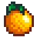 | Orange | 橙子 | 柳橙 |
 |
Poppy | 虞美人 | 罌粟花 |
 |
Potato | 土豆 | 馬鈴薯 |
 |
Red Cabbage | 紅葉捲心菜 | 紫高麗菜 |
 |
Rice Shoot | 水稻發芽 | 秧苗 |
 |
Rice | 大米 | 米 |
 |
Salmonberry | 美洲大樹莓 | 鮭莓 |
 |
Spice Berry | 香味漿果 | 辛香漿果 |
 |
Sweet Pea | 甜豌豆 | 香豌豆 |
 |
Tomato | 西紅柿 | 番茄 |
 |
Unmilled Rice | 未碾米 | 稻穀 |
 |
Wild Horseradish | 野山葵 | 野辣根 |
| 圖示 | 英文 | 簡體中文 | 正體中文 |
|---|---|---|---|
 |
Albacore | 青花魚 | 長鰭鮪魚 |
 |
Bullhead | 大頭魚 | 牛頭鯰 |
 |
Clam | 蛤 | 扇貝 |
 |
Crayfish | 小龍蝦 | 螯蝦 |
 |
Dorado | 麻哈脂鯉 | 黃金河虎 |
 |
Lingcod | 蛇齒單線魚 | 長蛇齒單線魚 |
 |
Mussel | 蚌 | 淡菜 |
 |
Roe | 魚籽 | 魚卵 |
 |
Red Mullet | 紅鯔魚 | 秋姑魚 |
 |
Shrimp | 蝦 | 蝦子 |
 |
Stonefish | 石魚 | 石頭魚 |
 |
Tilapia | 羅非魚 | 吳郭魚 |
 |
Tuna | 金槍魚 | 鮪魚 |
 |
Void Salmon | 無力的鮭魚 | 虛空鮭魚 |
 |
Walleye | 大眼魚 | 玻璃梭吻鱸 |
| 圖示 | 英文 | 簡體中文 | 正體中文 |
|---|---|---|---|
 |
Caviar | 魚籽醬 | 魚子醬 |
 |
Cheese | 奶酪 | 乳酪 |
 |
Large Milk | 大壺牛奶 | 大瓶牛奶 |
 |
Mayonnaise | 蛋黃醬 | 美乃滋 |
 |
Mead | 蜜蜂酒 | 蜂蜜酒 |
 |
Pale Ale | 淡啤酒 | 淡艾爾啤酒 |
 |
Pickles | 醃菜 | 泡菜 |
 |
Wheat Flour | 大麥粉 | 小麥粉 |
 |
Wine | 果酒 | 酒 |
| 圖示 | 英文 | 簡體中文 | 正體中文 |
|---|---|---|---|
 |
Blackberry Cobbler | 黑莓脆皮餅 | 脆皮黑莓派 |
 |
Blueberry Tart | 藍莓千層酥 | 藍莓塔 |
 |
Chowder | 海鮮雜燴湯 | 巧達濃湯 |
 |
Coleslaw | 捲心菜沙拉 | 高麗菜沙拉 |
 |
Complete Breakfast | 完美早餐 | 早餐套餐 |
 |
Crab Cakes | 蟹黃糕 | 蟹肉餅 |
 |
Cranberry Candy | 蔓越莓糖果 | 蔓越莓果汁 |
 |
Cranberry Sauce | 紅莓醬 | 蔓越莓醬 |
 |
Dish O' The Sea | 海之菜餚 | 海之盛宴 |
 |
Eggplant Parmesan | 帕爾瑪奶酪茄子 | 帕馬森乳酪茄子 |
 |
Field Snack | 工作小食 | 田野零食 |
 |
Fish Taco | 魚肉卷 | 魚肉塔可餅 |
| 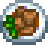 | Fried Mushroom | 炒蘑菇 | 炸蘑菇 |
 |
Magic Rock Candy | 魔法糖冰棍 | 魔法冰糖棒 |
 |
Maki Roll | 生魚壽司 | 卷壽司 |
 |
Maple Bar | 楓糖棒 | 楓糖板擦甜甜圈 |
 |
Miner's Treat | 礦工特供 | 礦工的招待 |
| 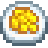 | Omelet | 煎蛋卷 | 歐姆蛋 |
 |
Pancakes | 薄煎餅 | 美式鬆餅 |
 |
Pepper Poppers | 爆炒青椒 | 辣椒鑲起司 |
| Poppyseed Muffin | 虞美人籽鬆糕 | 罌粟籽瑪芬 | |
 |
Rice Pudding | 大米布丁 | 米布丁 |
 |
Roots Platter | 塊莖拼盤 | 塊根拼盤 |
 |
Shrimp Cocktail | 蝦雞尾酒 | 雞尾酒蝦 |
 |
Stir Fry | 蔬菜什錦蓋飯 | 什錦蔬菜蓋飯 |
 |
Stuffing | 塞料麵包 | 填料 |
 |
Super Meal | 巨無霸餐 | 巨無霸特餐 |
| 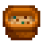 | Tom Kha Soup | 椰汁湯 | 椰奶湯 |
 |
Tortilla | 墨西哥薄餅 | 玉米薄餅 |
| 圖示 | 英文 | 簡體中文 | 正體中文 |
|---|---|---|---|
 |
Alamite | 透閃石 | 水砷鋅礦 |
 |
Bixite | 黑方石 | 方鐵錳礦 |
 |
Esperite | 硅鈣石 | 矽鈣鉛鋅礦 |
 |
Fire Opal | 赤紅蛋白石 | 火蛋白石 |
 |
Geminite | 傑明石 | 三斜砷銅石 |
 |
Jagoite | 鐵鉛礦 | 氯矽鐵鉛礦 |
 |
Lunarite | 酸性月岩 | 淡色月岩 |
 |
Mudstone | 泥石 | 泥岩 |
 |
Nekoite | 新硅鈣石 | 新水矽鈣石 |
 |
Opal | 貓眼石 | 蛋白石 |
 |
Prismatic Shard | 五彩碎片 | 七彩碎片 |
 |
Star Shards | 陶瓷碎片 | 星之碎片 |
 |
Topaz | 黃水晶 | 黃玉 |
| 圖示 | 英文 | 簡體中文 | 正體中文 |
|---|---|---|---|
 |
Artifact Spot | 遠古斑點 | 挖掘點 |
 |
Dressed Spinner | 精裝旋式魚餌 | 精裝旋式亮片魚鉤 |
 |
Driftwood | 浮木 | 漂流木 |
| Dwarvish Translation Guide | 矮人語教程 | 矮人語翻譯指南 | |
 |
Energy Tonic | 能量滋補水 | 能量補劑 |
| Lead Bobber | 鉛製浮標 | 鉛浮標 | |
| Lost Axe | 丟失的斧子 | 遺失的斧頭 | |
 |
Lucky Purple Shorts | 幸運紫色短褲 | 幸運紫色內褲 |
 |
Mermaid's Pendant | 美人魚吊墜 | 美人魚墜飾 |
 |
Muscle Remedy | 肌肉回復藥 | 筋力回復劑 |
| Nautilus Shell | 鸚鵡螺 | 鸚鵡螺殼 | |
 |
Rabbit's Foot | 兔子的腳 | 幸運兔腳 |
 |
Rain Totem | 雨水圖騰 | 降雨圖騰 |
 |
Slime | 史萊姆 | 史萊姆泥 |
| 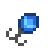 | Spinner | 旋式魚餌 | 旋式亮片魚鉤 |
 |
Tree Fertilizer | 樹肥 | 樹木肥料 |
| Void Ghost Pendant | 虛空幽靈吊墜 | 虛空幽靈墜飾 | |
 |
Wild Bait | 萬能魚餌 | 野性魚餌 |
| 圖示 | 英文 | 簡體中文 | 正體中文 |
|---|---|---|---|
 |
Big Green Cane | 大綠杖 | 綠色枴杖糖（大） |
| Big Red Cane | 大紅杖 | 紅色枴杖糖（大） | |
 |
Carved Brazier | 鏤空火炬 | 雕刻火盆 |
| 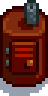 | Charcoal Kiln | 煤炭窯 | 木炭窯 |
 |
Chest | 寶箱 | 箱子 |
 |
Crystalarium | 寶石複製機 | 晶體複製機 |
 |
Cursed P.K. Arcade System | 被詛咒的P.K.街機系統 | 被詛咒的草原之王遊戲機臺 |
 |
Dried Sunflowers | 風乾太陽花 | 乾燥向日葵 |
| Drum Block | 鼓塊 | 鼓方塊 | |
| Empty Capsule | 空置的膠囊 | 空的膠囊 | |
| 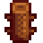 | Fence | 圍欄 | 柵欄 |
 |
Flute Block | 長笛塊 | 長笛方塊 |
| Gate | 大門 | 柵欄門 | |
| Green Canes | 綠杖 | 綠色枴杖糖 | |
| Junimo Kart Arcade System | 祝尼魔賽車街機系統 | 祝尼魔賽車遊戲機臺 | |
 |
Keg | 小桶 | 釀造桶 |
 |
Lawn Flamingo | 草坪火烈鳥 | 草坪紅鶴 |
 |
Mayonnaise Machine | 蛋黃醬機 | 美乃滋製造機 |
| Mixed Cane | 混色杖 | 混色枴杖糖 | |
 |
Oil Maker | 產油機 | 製油機 |
| Prairie King Arcade System | 草原之王街機系統 | 草原之王遊戲機臺 | |
 |
Preserves Jar | 罐頭瓶 | 醃製桶 |
 |
Red Canes | 紅杖 | 紅色枴杖糖 |
 |
Seed Maker | 種子生產器 | 種子製造機 |
| 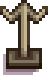 | Sign Of The Vessel | 船標 | 由巴的象徵 |
 |
Slime Egg-Press | 史萊姆壓蛋器 | 史萊姆蛋壓製機 |
| Sloth Skeleton L | 左傾樹懶骨頭 | 樹懶骨架（左） | |
| Sloth Skeleton M | 中樹懶骨頭 | 樹懶骨架（中） | |
| Sloth Skeleton R | 右樹懶骨頭 | 樹懶骨架（右） | |
 |
Standing Geode | 直立的晶洞 | 直立水晶洞 |
 |
Stone Brazier | 石頭火炬 | 石製火盆 |
| 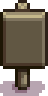 | Stone Sign | 石牌 | 石製告示牌 |
| Suit Of Armor | 裝甲 | 鎧甲 | |
 |
Table Piece L | 桌子部件L | 桌子（左半部） |
| Table Piece R | 桌子部件R | 桌子（右半部） | |
 |
Weathered Floor | 風化地板 | 陳舊地板 |
| Wood Sign | 木牌 | 木製告示牌 | |
| Wooden Brazier | 木頭火炬 | 木製火盆 | |
| Worm Bin | 蟲餌盒 | 蟲餌箱 |
| 圖示 | 英文 | 簡體中文 | 正體中文 |
|---|---|---|---|
 |
Anchor | -錨- | 錨 |
 |
Chewing Stick | 咀嚼潔齒棒 | 潔齒棒 |
 |
Prehistoric Vertebra | 史前脊骨 | 史前椎骨 |
| 圖示 | 英文 | 簡體中文 | 正體中文 |
|---|---|---|---|
 |
Copper Pan | 銅鍋 | 銅製淘金盤 |
| 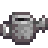 | Watering Can | 噴壺 | 澆水壺 |
| 圖示 | 英文 | 簡體中文 | 正體中文 |
|---|---|---|---|
 |
Abby's Planchette | 阿比蓋爾的占卜寫板 | 阿比蓋爾的通靈乩板 |
 |
Alex's Bat | 亞歷克斯的棒球棍 | 艾力克斯的球棒 |
| Dark Sword | 黑暗劍 | 暗黑之劍 | |
 |
Elliott's Pencil | 艾利歐特的鉛筆 | 艾略特的鉛筆 |
| Forest Sword | 森林劍 | 森林之劍 | |
| 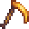 | Golden Scythe | 金色的鐮刀 | 金鐮刀 |
 |
Haley's Iron | 海莉之鐵 | 海莉的電捲棒 |
 |
Harvey's Mallet | 哈維的錘子 | 哈維的神經槌 |
| 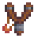 | Master Slingshot | 高級彈弓 | 大師彈弓 |
| Rapier | 細劍 | 護手刺劍 | |
 |
Seb's Lost Mace | 塞巴斯蒂安的遺失之錘 | 賽巴斯汀的遺失之錘 |
| 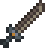 | Steel Falchion | 鋼刀 | 鋼製彎刀 |
 |
Steel Smallsword | 鋼製輕劍 | 鋼製小劍 |
 |
Wood Mallet | 木錘 | 木槌 |
| 圖示 | 英文 | 簡體中文 | 正體中文 |
|---|---|---|---|
 |
Blue Bonnet | 藍色軟帽 | 藍色無邊軟帽 |
| Earmuffs | 護耳 | 耳罩 | |
| 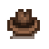 | Fedora | 軟呢帽 | 費多拉帽 |
 |
Flat Topped Hat | 平頂帽 | 平頂禮帽 |
 |
Gnome's Cap | 土地神帽 | 地精帽 |
 |
Good Ol'_Cap | 老伙伴帽 | 老朋友帽 |
| Hair Bone | 骨髮夾 | 骨蝶結 | |
 |
Official Cap | 大簷帽 | 大盤帽 |
| 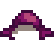 | Plum Chapeau | 紫紅小帽 | 紫紅帽 |
| 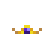 | Tiara | 三重冕 | 寶石冠冕 |
 |
Turban | 頭巾 | 特本頭巾 |
| 圖示 | 英文 | 簡體中文 | 正體中文 |
|---|---|---|---|
| 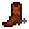 | Cowboy Boots | 牛仔之靴 | 牛仔靴 |
| Firewalker Boots | 蹈火者靴 | 踏火靴 | |
| 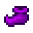 | Genie Shoes | 神怪之鞋 | 神燈精靈鞋 |
 |
Leprechaun Shoes | 矮精靈鞋子 | 矮精靈鞋 |
| 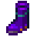 | Space Boots | 太空之靴 | 太空靴 |
 |
Tundra Boots | 凍土靴 | 凍原靴 |
| 圖示 | 英文 | 簡體中文 | 正體中文 |
|---|---|---|---|
 |
Burglar's Ring | 潛行者戒指 | 盜賊戒指 |
| Savage Ring | 野蠻人戒指 | 野蠻戒指 | |
 |
Slime Charmer Ring | 史萊姆剋星戒指 | 蠱惑史萊姆戒指 |
 |
Sturdy Ring | 結實戒指 | 堅定戒指 |
| 圖示 | 英文 | 簡體中文 | 正體中文 |
|---|---|---|---|
 |
Bug | 臭蟲 | 蟲 |
| Carbon Ghost | 碳鬼 | 碳幽靈 | |
 |
Duggy | 道基 | 挖洞怪 |
| Dust Sprite | 沙塵惡靈 | 塵埃精靈 | |
| Frost Bat | 冰凍蝙蝠 | 冰霜蝙蝠 | |
 |
Frost Jelly | 冰凍果凍 | 藍色史萊姆 |
 |
Pepper Rex | 霸王辣椒 | 霸王椒龍 |
| Shadow Brute | 影子狂徒 | 暗影狂徒 | |
| Skeleton | 骨頭 | 骷髏 | |
 |
Stone Golem | 石魔 | 石魔像 |
| 圖示 | 英文 | 簡體中文 | 正體中文 |
|---|---|---|---|
 |
'1000 Years From Now' | 「從今往後1000年」 | 《從今以後 1000 年》 |
 |
'A Night On Eco-Hill' | 「生態山之夜」 | 《生態陵之夜》 |
 |
'Jade Hills' | 「翡翠山」 | 《翡翠山丘》 |
 |
'VGA Paradise' | 「顯卡天堂」 | 《VGA 樂園》 |
| 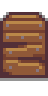 | Boarded Window | 乘船口 | 封閉窗戶 |
 |
Bonsai Tree | 盆景樹 | 盆景 |
| Ceiling Flags | 天花板旗幟 | 吊旗 | |
 |
China Cabinet | 碗櫃 | 中式儲藏櫃 |
 |
Dark Bookcase | 深色書架 | 暗黑書架 |
| Junimo Plush | 祝尼魔毛絨 | 祝尼魔絨毛玩具 | |
 |
Mahogany Bench | 紅木長椅 | 桃花心木長椅 |
 |
Miner's Crest | 礦工的冠 | 礦工的飾章 |
 |
Model Ship | 輪船模型 | 模型船 |
 |
Monster Danglers | 怪物環 | 怪物掛飾 |
| Night Sky Decal | 夜空貼花 | 夜空壁貼 | |
 |
Patchwork Rug | 拼色地毯 | 拼布地毯 |
| Plasma TV | 等離子電視 | 電漿電視 | |
 |
Stove Fireplace | 爐式壁爐 | 分離式壁爐 |
 |
Winter Dining Table | 冬日餐桌 | 凜冬餐桌 |
| 英文 | 簡體中文 | 正體中文 |
|---|
求求你給我錢錢_(:3 」∠ )_